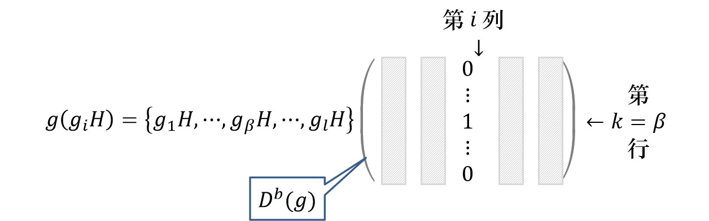

函数变换和表示的构造
坐标变换：三维空间中矢量 r 经变换 R 后变为 r′=Rr
函数变换：自变量为矢量 r 的标量函数 f(r) 的变换
f(r)→f′(r)=P^Rf(r)
变换前后应满足的关系
f′(r′)=f(r)
那么可以推出
f′(r′)=f(r)⇒f′(Rr)=f(r)⇒f′(r)=f(R−1r)=P^Rf(r)
P^Rf(r)=f(R−1r)
如果所有变换 R 构成群 G，那么变换算符 P^R 也构成群 Gp，并且它们之间存在同构关系
P^RP^S=P^RS
群 G 和群 Gp 在数学上是一样的。那么，如果取定一组对该群中变换封闭的函数基 {φi(r)∣i=1,2,…,d}，便可决定该群的一个表示：
P^Rφi(r)=φi(R−1r)=j=1∑dφj(r)Dji(R)
对称变换群基函数的性质
对称变换：变换前后体系与自身重合
正交矩阵：RT=R−1
与正交矩阵对应的函数变换算符 P^R 是幺正的。若定义平方可积的函数内积为
(ϕ(r),ψ(r))=⟨ϕ(r)∣ψ(r)⟩=∫ϕ(r)∗ψ(r)dr
可以证明：
(P^Rϕ(r),P^Rψ(r))=(ϕ(r),ψ(r))
定理一（基函数的正交定理）：属于两个不等价不可约幺正表示的基函数，以及属于同一不可约幺正表示的不同列的基函数，都是正交的。
(ϕμp(r),ψνq(r))=δpqδμνf
其中 f 为常数。
定理二：若基函数 {ϕ1(r),ϕ2(r),…,ϕd(r)} 满足
(ϕμ,ϕν)=δμνf
其中 f 为常数，则由这组基函数所张成的表示 D(G) 是幺正的。
定理三：若 {ϕ1(r),ϕ2(r),…,ϕd(r)} 是群 G 的一个幺正表示的基函数，则其模方和在群 G 的任意群元下作用不变：
P^R(k=1∑d∣ϕk(r)∣2)=k=1∑d∣ϕk(r)∣2
定理四：若 {Dp(G)}(p=1,2,…,nr) 是有限的对称变换群 G 的所有不等价不可约幺正表示，那么对于任意函数 ψ(r)，一定存在这些表示的基函数 {ϕμp(r)} 能将 ψ(r) 线性展开，即
ψ(r)=p=1∑nrμ=1∑dpaμpϕμp(r)
投影算符
投影算符
定义如下线性算符
P^μνp=∣G∣dpR∈G∑Dμνp∗(R)P^R
其中 Dp 是群 G 的第 p 个不等价不可约幺正表示，dp 是该表示的维数，∣G∣ 是群 G 的阶。该算符作用在第 q 个不等价不可约幺正表示的第 α 列基函数的结果为
P^μνpϕαq(r)=δpqδναϕμp(r)
该算符 P^μνp 称为投影算符。
- P^μνp 的作用：将第 p 个不等价不可约幺正表示的第 α 列基函数投影到第 μ 列基函数上。
- P^μνp 的作用是从任意函数中投影出属于第 p 个不等价不可约幺正表示的第 ν 列的分量，并将其转换为第 μ 列的分量。
对任意给定的函数 ψ(r)，总可以将其按群 G 的所有 IIUR 的基展开：
ψ(r)=p=1∑nrμ=1∑dpaμpϕμp(r)
从任意给定函数 ψ(r) 出发，利用投影算符可构造 IIUR 的基。
准投影算符
定义准投影算符：
P^μp=P^μμp=∣G∣dpR∈G∑Dμμp∗(R)P^R
其作用在第 q 个 IIUR 的第 α 列基函数上为
P^μpϕαq(r)=δpqδμαϕμq(r)
对任意给定的函数 ψ(r)，如果其中包含 ϕμp(r) 则可被准投影算符 P^μp 投影出来：
P^μpψ(r)=p=1∑nrμ=1∑dpaμpP^μpϕμp(r)=p=1∑nrμ=1∑dpaμpδppδμμϕμp(r)=aμpϕμp(r)
注意：投影结果有一个系数 aμp，如用一系列 P^μp 作用在 ψ(r) 得到的结果并不就是表示 Dp(G) 的基函数 ϕμp(r)，而是该基函数乘以系数 aμp。
特征标投影算符
定义特征标投影算符如下：
P^p=μ=1∑dpP^μμp=ndpR∈G∑Xp∗(R)P^R
其作用在第 q 个 IIUR 的第 α 列基上的结果为
P^pϕαq(r)=δpqϕαq(r)
对任意给定的函数 ψ(r)，如果其中包含属于第 p 个 IIUR 的基函数，则可被特征标投影算符 P^p 投影出来：
P^pψ(r)=q=1∑nrα=1∑dqaαqP^pϕαq(r)=q=1∑nrα=1∑dqaαqδpqϕαq(r)=α=1∑dpaαpϕαp(r)
可用来判断任意给定的函数 ψ(r) 中是否包含属于第 p 个 IIUR 的基，如果包含任何一个则投影结果不为零。
- 已知一个 IIUR，如何求其基？投影算符！
- 已知一个 IIUR 的特征标，如何求其基？特征标投影算符！
投影算符的性质来自于表示矩阵元的正交关系，若去掉幺正性限制，则有对不等价不可约表示成立的更普适的矩阵元正交性定理
R∈G∑Dμνp(R−1)Dμ′ν′q(R)=dp∣G∣δpqδμμ′δνν′
以及对非幺正不可约表示也成立的投影算符
P^μνp=∣G∣dpR∈G∑Dνμp(R−1)P^R
基础表示
设群 G 有子群 H，按陪集分解为 G=g1H+g2H+⋯+glH，群元作用在陪集上为 g(giH)=ggiH=gjH∈{giH∣i=1,2,…,l}。我们将作用后的陪集以所有陪集为基函数，构造出群 G 的一个表示
g(giH)=gjH=k=1∑l(gkH)Dkib(g)
以子群的陪集 {giH} 作为基的表示 Db(G) 称为群 G 的基础表示。
- 以群元作为基 ⇒ 正规表示 以陪集作为基 ⇒ 基础表示
- 若子群取单位元，则陪集即为群元，基础表示即为正规表示。所以正规表示的一个特例。
基础表示的表示矩阵元为
Dkib(g)={1,0,ggiH=gkHORggi∈gkHORg∈gkHgi−1ggiH=gkHORggi∈/gkHORg∈/gkHgi−1
取非零元的条件是两个陪集相等。陪集代表元的指标 β(g,i) 由 g 和 gi 确定，因而是g 和 gi 的函数。记 ggiH=gβ(g,gi)H，则对表示矩阵元有
Dkib(g)=δk,β(g,i)=δk,β
也就是要对给定的 g 和 gi，求满足条件的 k=β 的 k。

分导表示和诱导表示
分导表示和诱导表示是群和其子群表示之间的联系。
分导表示和诱导表示的定义
设 D(G) 是群 G 的一个不可约表示，H 是群 G 的一个子群，则矩阵群 D(H)={D(g)∣g∈H} 构成子群 H 的一个表示，这个表示 D(H) 称为表示 D(G) 在 H 中的分导表示，也记为 D↓H。对于子群 H 来说，分导表示 D↓H 一般是可约的。
分导表示是由 D(G)的表示得到的 D(H)的表示。那么由 D(G)的表示能否得到 D(H)的表示？可以！但不能直接来，因为 D(H) 在 G 中并不一定有定义。
设 Δ(H) 是 m 阶子群 H 的 d 维表示，其基为 {e1,e2,…,ed}。
Γhei=j=1∑dejΔji(h)h∈H
将 G 按陪集分解为 G=g1H⊕g2H⊕⋯⊕glH，其中 l=∣G∣/∣H∣。以矢量 {Γg1ei,Γg2ei,…,Γglei∣i=1,2,…,d} 为基可以构造群 G 的一个 ld 维表示 DI，这个表示称为 Δ(H) 在 G 中的诱导表示，也记为 Δ↑G。
以陪集代表元和子群表示的基之积为基，因此 DI 的维数为 ld。
Γg(Γgαei)=ΓgβΓh(g,α)ei=γ=1∑lj=1∑d(Γgγej)Dγαb(g)Δji(h(g,α))=γ=1∑lj=1∑d(Γgγej)Dγj,αiI(g)
诱导矩阵的矩阵元和矩阵为
Dγj,αiI(g)DγαI(g)=Dγαb(g)Δji(h(g,α))=Dγαb(g)Δ(h(g,α))
其中 DγαI(g) 为超矩阵
DγαI(g)=Dγαb(g)Δ(h(g,α))=δγ,β(g,α)Δ(h(g,α)),h(g,α)=gβ(g,α)−1ggα
与直积的异同：都是在基础表示的矩阵元的位置上乘以子群表示矩阵块，不同的是直积中乘的矩阵块与位置无关，而超矩阵中的矩阵块 h(g,α) 依赖于 g 和 α。
诱导表示的特征标
χI(g)=α∑i∑Dαi,αiI(g)=α∑i∑δα,β(g,α)Δii(h(g,α))=α∑δαβ(g,α)χΔ(gβ(g,α)−1ggα)={α∣gα−1ggα∈H}∑χΔ(gα−1ggα)
诱导表示 DI 一般是可约的。而 G 的不可约表示 Dp，在子群 H 中的分导表示 Dp(H) 一般可约。
如果 H 的表示 Δ(H) 就是其某一个不可约表示 Δq(H)，那么
ap=(m1h∈H∑χΔq(h)∗χp(h))=(bqp)∗=bqp
Frobenius 倒易定理：设子群 H 的不可约表示 Δq(H) 在 G 中的诱导表示为 ΔI(G)，那么 DI(G) 中包含的 G 的不可约表示 Dp(G) 的个数 ap 正好等于 Dp(G) 在 H 中的分导表示 Dp↓H 中包含 Δq(H) 的个数 bqp
ap=bqp
表示的直积与CG系数
直积表示的定义
定理：设 Dp(G) 和 Dq(G) 是群的两个表示，表示维数分别为 dp 和 dq，那么这两个表示的直积
D(p,q)(G)=Dp(G)⊗Dq(G),∀g∈G
是群 G 的一个 dpdq 维表示。且如果 Dp(G) 和 Dq(G) 都是幺正的，则直积表示 D(p,q)(G) 也是幺正的；无论 Dp(G) 和 Dq(G) 是否可约，直积表示 D(p,q)(G) 一般是可约的。
直积表示的特征标：χ(p,q)(g)=χp(g)χq(g)
CG系数
设表示 Dp(G) 的基为 {∣ϕip⟩}，表示 Dq(G) 的基为 {∣ϕjq⟩}，则直积表示 D(p,q)(G) 的基为 {∣ϕipϕjq⟩}。约化后等价表示 Dˉ(p,q) 的基为 {∣ψlλα⟩}。
上述的几种基都是正交归一的
直积表示与不可约表示有变换关系
Dˉ(p,q)(g)=S−1D(p,q)(g)S,∀g∈G
对应的基变换为
∣ψlλα⟩=i∑dpj∑dq∣ϕipϕjq⟩Sij,λlα
相似变换矩阵元 Sij,λlα 就是新基 {∣ψlλα⟩} 在旧基 {∣ϕipϕjq⟩} 下的展开系数，称为Clebsch-Gordan 系数（CG 系数）。可以看出，CG 系数就是新基在旧基下的投影系数
Sij,λlα=⟨ϕipϕjq∣ψlλα⟩≡⟨p qi jλlα⟩
对于两个确定的表示，p 和 q 是固定的
CG系数的计算
由于每个基都是正交归一的，这就决定了 CG 系数矩阵 S 是一个幺正矩阵，即不同的列（行）是正交归一的。换个形式写出 S 的幺正性，可得如下正交完备关系
λ∑α∑l∑⟨p qi jλlα⟩⟨λlαp qi′ j′⟩=δii′δjj′i∑j∑⟨λlαp qi j⟩⟨p qi jλ′l′α′⟩=δλλ′δαα′δll′
当 α 可以 >1 时，满足条件的 CG 系数不唯一；当 α=1 时，CG 系数可以确定到相差一个相因子。接下来我们考虑后者，去掉 α 指标，有
⟨p qi′ j′λk′⟩⟨λkp qi j⟩=dpdqdλg∈G∑Di′ip(g)Dj′jq(g)Dk′kλ∗(g)
取 i′=i, j′=j, k′=k 上式变为
⟨p qi jλk⟩2=dpdqdλg∈G∑Diip(g)Djjq(g)Dkkλ∗(g)
直积群的表示
直积群（两个具有相同乘法定义的群，彼此对易，只有单位元共同）是群的直积（任意两个群，可以无关）的特例。我们研究后者的性质。
直积群是两个群各自的表示，总共有三个群三个表示；表示的直积同一各群的不同表示的直积。
性质一：χ(p,q)(g1,g2)=χ1p(g1)χ2q(g2)
性质二：若 D1p 和 D2q 分别是群 G1 和 G2 的不可约表示，则直积表示 D(p,q)=D1p⊗D2q 是直积群 G1⊗G2 的不可约表示。
性质三：群 G1 的所有不等价不可约表示 {D1p∣p=1,2,…,r1} 和群 G2 的所有不等价不可约表示 {D2q∣q=1,2,…,r2} 的直积表示 {D(p,q)=D1p⊗D2q∣p=1,2,…,r1;q=1,2,…,r2} 构成直积群 G1⊗G2 的所有不等价不可约表示。
性质四：若群 G1 的 D1p 表示的基为 {∣ϕip⟩}，群 G2 的 D2q 表示的基为 {∣ψjq⟩}，则直积表示 D(p,q) 的基为 {∣ϕip⟩⊗∣ψjq⟩}。（仅当两个子群的变换只作用于各自的基时成立）